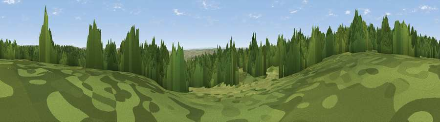

Viewpoint near Falstone
#21675 in England · top 47% of its area beats it · near FalstoneWhere it is
The exact computed spot (NY 74825 88125). Click the marker for map links.
The view, rendered

A 360° render of this exact spot computed from the terrain model, tree cover and land cover — summer colours, afternoon light, calibrated against photographs of famous viewpoints. Real trees, hedges and buildings will differ in detail.
The panorama
Grey silhouette: terrain skyline in each direction (720 bearings, Earth curvature and refraction included). Dashed green: skyline with trees (+15 m) and buildings (+8 m) as obstacles. Blue strip: how far the ground is visible on each bearing.
Where the view opens
Wedge length = distance to the farthest visible ground on that bearing (vegetation-aware). Rings at 10, 25 and 50 km.
What fills the view
56% woodland · 44% grassland
Angular shares of the visible panorama (visual magnitude), not map area. Landscape diversity 0.30 (0–1 Shannon).
Key numbers
More beautiful places nearby
The staircase of upgrades: each row has a higher view potential than everything closer. Driving times are estimates from straight-line distance, calibrated against real road routing — check an actual route before setting out.
| Place | Direction | Drive | Score |
|---|---|---|---|
| Viewpoint near Falstone | WSW · 1 km | ~3 min | 57.7 |
| Viewpoint near Greenhaugh | E · 2 km | ~5 min | 66.8 |
| Viewpoint near Greenhaugh | ENE · 4 km | ~10 min | 68.3 |
| Viewpoint near Greenhaugh | SSE · 7 km | ~15 min | 71.2 |
| Padon Hill | NE · 9 km | ~17 min | 72.6 |
| Monkside | NW · 9 km | ~18 min | 78.4 |
| Deadwater Fell | NW · 15 km | ~27 min | 79.4 |
| Viewpoint c11995_7247 | NW · 17 km | ~30 min | 82.1 |
55.18676, -2.39692 · source: screening · position refined by local search. Computed location — check access rights before visiting.